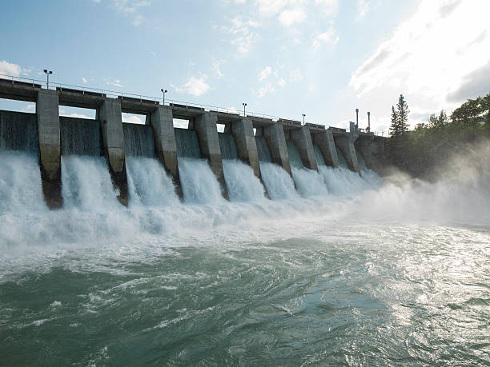
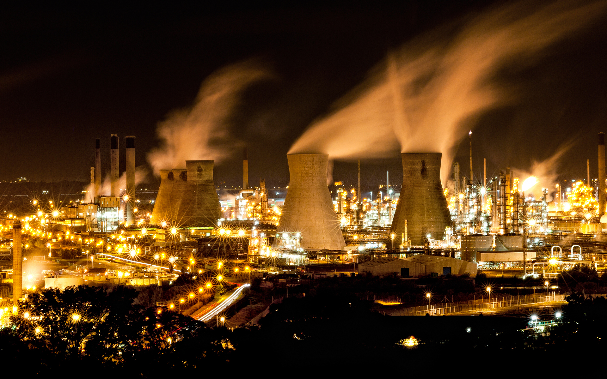

As fontes de energia
As fontes de energia são diversas e variam de acordo com sua natureza e características.
As fontes renováveis, como solar, eólica e hidráulica, são fontes limpas e
sustentáveis, enquanto as não renováveis, como petróleo, gás e carvão, são poluentes e
esgotáveis. Cada fonte de energia tem suas vantagens e desvantagens, assim como
seu impacto ambiental e econômico. A eficiência energética é fundamental para o
desenvolvimento sustentável e a preservação do meio ambiente.
Energia Hidraulica
Energia Eólica
Energia Solar
Energia Nuclear
Energias
Hidraulica
A energia hidráulica é a energia gerada a partir
da força das águas em movimento, transformada em
energia elétrica através do aproveitamento dos cursos
d’água. Esse tipo de energia é uma fonte de energia
limpa, renovável e econômica, já que não emite poluentes
e o funcionamento de uma usina hidrelétrica é de baixo custo.
O funcionamento de uma usina hidrelétrica é simples:
a água é armazenada em um reservatório e, quando necessário,
é liberada para movimentar as turbinas. A força da água
em movimento faz girar as pás das turbinas, que acionam os
geradores elétricos. A eletricidade produzida é transmitida
para a rede elétrica de distribuição.
Uma das vantagens da energia hidráulica é que ela pode ser
armazenada, possibilitando a geração de energia mesmo em
períodos de escassez de chuva. Além disso, as usinas hidrelétricas
podem ser construídas em rios, lagos, barragens e quedas d’água,
o que permite a sua instalação em diferentes regiões.
Por outro lado, a construção de usinas hidrelétricas pode ser
prejudicial ao meio ambiente, uma vez que implica na inundação
de áreas naturais, incluindo ecossistemas, matas ciliares e
terras agrícolas. Os pedidos de licenciamento ambiental de usinas
hidrelétricas também são alvo de críticas e polêmicas, já que
muitas vezes não são realizados estudos adequados de impacto ambiental.
Outro problema é que a instalação de usinas hidrelétricas não
pode ser feita em qualquer localidade, afetando o desenvolvimento
econômico de algumas regiões. Além disso, as usinas hidrelétricas
podem ser afetadas pela falta de chuva e pelas mudanças climáticas,
gerando problemas na oferta de energia elétrica.
Em resumo, a energia hidráulica é uma fonte de energia limpa,
renovável e econômica, mas que apresenta desafios na construção
e instalação de usinas hidrelétricas, como a necessidade de avaliar
o impacto ambiental, a disponibilidade de áreas adequadas e a
vulnerabilidade às mudanças climáticas. Os avanços na tecnologia
de geração de energia elétrica devem considerar a utilização dessa
fonte, a fim de garantir um suprimento de energia elétrica mais limpa
e eficiente.

Eólica
A energia eólica é gerada através do vento,
que faz girar as pás das turbinas, que por
sua vez acionam um gerador elétrico, transformando
a energia cinética em energia elétrica. A energia
eólica é considerada uma fonte de energia limpa,
renovável e sustentável, já que não emite gases
poluentes e sua geração não gera resíduos.
A instalação de usinas de energia eólica é
uma maneira econômica e eficiente de produzir
energia elétrica em lugares com ventos favoráveis.
As turbinas eólicas podem ser instaladas tanto
em terra quanto em mar, tendo um potencial de
geração de energia elétrica ainda maior nesse último
caso, já que os ventos são mais constantes e mais intensos.
A energia eólica tem algumas vantagens em relação
a outras fontes de energia, como a sua disponibilidade
constante, a capacidade de geração distribuída, a
diversificação da matriz energética e a possibilidade
de redução das emissões de gases do efeito estufa.
Porém, a energia eólica apresenta algumas limitações,
como a necessidade de ventos consistentes e uma velocidade
mínima para a operação das turbinas. Outro desafio é
a sua instalação em zonas urbanas, já que o espaço
físico para instalação de turbinas eólicas pode ser
limitado e a interferência visual pode ser um obstáculo.
Ainda assim, a energia eólica tem um grande potencial
de crescimento em todo o mundo, sendo uma alternativa
importante e sustentável para a geração de energia elétrica.
O aumento da capacidade de geração de energia eólica é uma
tendência em vários países, como Dinamarca, Espanha, Alemanha
e Estados Unidos, onde a produção de energia elétrica através
da força dos ventos já representa uma grande fatia da sua
matriz energética.
Em resumo, a energia eólica é uma solução importante
para a geração de energia elétrica limpa, renovável e
sustentável. Seu uso pode ajudar na diversificação da
matriz energética e na redução das emissões de gases
do efeito estufa, embora apresente desafios específicos
em relação à sua instalação e operação. A utilização
da energia eólica pode contribuir substancialmente para
a consolidação de um futuro energético mais sustentável
e resiliente no mundo.

Solar
A energia solar é uma fonte de energia renovável limpa
e sustentável que vem ganhando destaque nos últimos anos. Ela
é obtida a partir da
radiação solar, transformando-a em energia térmica ou
elétrica. Existem duas principais tecnologias utilizadas para captar essa energia: as
placas fotovoltaicas e os coletores solares.
As placas fotovoltaicas são responsáveis por captar a radiação
solar e transformá-la diretamente em energia elétrica, sem a
necessidade de equipamentos intermediários. Essa tecnologia
é bastante utilizada em residências e empresas, permitindo a redução da
conta de energia e a produção de energia limpa e renovável.
Já os coletores solares são responsáveis por transformar a
energia solar em energia térmica, podendo
ser utilizados para aquecimento de água em residências e
indústrias. Essa tecnologia é bastante utilizada em
regiões com alta radiação solar, como no Nordeste do Brasil.
Além de ser uma fonte de energia limpa, a energia solar também é bastante
econômica. Apesar do
alto custo inicial de instalação, que pode ser um empecilho para muitas pessoas, a
longo prazo ela se torna
bastante vantajosa, já que a energia solar é gratuita e dispensa
o pagamento de contas de luz.
Em resumo, a energia solar representa uma ótima alternativa
para a produção de
energia limpa e sustentável, além de apresentar uma grande
vantagem econômica a longo prazo. Com a crescente
preocupação em relação aos impactos ambientais causados
pelas fontes de energia não renováveis, a energia solar tem se
tornado cada vez mais popular e essencial para a construção de
um futuro mais sustentável.

Nuclear
A energia nuclear é uma das principais fontes mundiais de
geração de energia elétrica, sendo responsável por cerca de
10% da produção global. Ela é gerada a partir da fissão nuclear do
urânio, processo que libera uma grande quantidade de energia
térmica que é transformada em eletricidade.
Embora a energia nuclear seja considerada uma fonte de energia limpa,
já que não emite gases de efeito estufa, sua utilização também apresenta
riscos significativos. Um dos principais riscos é o da contaminação
radioativa, que pode ocorrer em caso de acidentes em usinas nucleares,
como o ocorrido em Chernobyl, na Ucrânia, em 1986, e em Fukushima, no Japão,
em 2011. Esse tipo de acidente pode ter consequências graves para a saúde
humana e para o meio ambiente.
Além disso, o uso da energia nuclear também gera resíduos radioativos
que são altamente prejudiciais ao meio ambiente e à saúde humana. Esses
resíduos precisam ser armazenados de forma adequada para evitar a
contaminação do solo e da água, e sua eliminação é um grande desafio.
Apesar dos riscos, a energia nuclear ainda é considerada uma fonte
estratégica de energia pelos países que a utilizam. Alguns países,
como a França, Japão e Coreia do Sul, têm grande parte de sua eletricidade
gerada a partir da energia nuclear. Outros, como a Índia e a China, têm
investido pesadamente na construção de usinas nucleares para suprir a
crescente demanda por energia em seus territórios.
Em resumo, a energia nuclear é uma fonte de energia limpa e estratégica,
porém apresenta riscos significativos de contaminação radioativa e geração
de resíduos altamente prejudiciais. É importante que os países que utilizam
essa fonte de energia adotem medidas rigorosas de segurança e de gestão
de resíduos para minimizar os riscos envolvidos.
